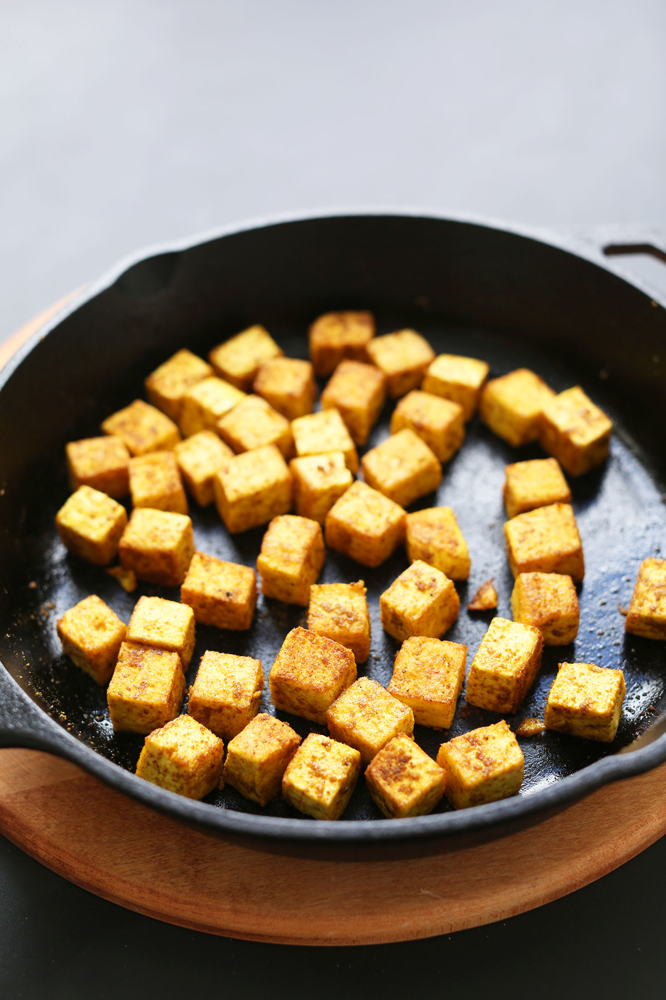

Tofu Fry

This Indian breakfast meal is created by simply frying tofu with
a pinch of salt.
Packed with protein, fiber and multiple micronutrients, this satiating
and delicious meal boosts health.
Ingredients
Steps
- Dice the tofu
- Heat some oil or butter in a pan till it starts running smoothly
- Fry a side till golden brown then flip
- Let the other side fry till golden brown too
- Toss the tofu onto your plate, sprinkle some salt and enjoy